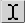
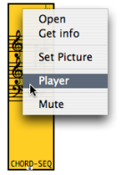

OpenMusic DocumentationHiérarchie de section : OM 6.6 User Manual > Maquettes > The Maquette Editor > The Palette
OpenMusic DocumentationHiérarchie de section : OM 6.6 User Manual > Maquettes > The Maquette Editor > The Palette
Navigation : page précédente | page suivante
Attention, votre navigateur ne supporte pas le javascript ou celui-ci à été désactivé. Certaines fonctionnalités de ce guide sont restreintes.
The Palette
Palette
The maquette provides a palette with navigation controlers, a player, and an evaluation command. |
{kind=link}
Navigation
| Zoom : | click and drag the mouse over a zone of the maquette to zoom on it. | |
| Hand : | click and slip to reach a zone of the maquette without changing its scale. | |
| Reset : | select this tool to fit the content of the maquette to the window editor. | |
|  | Segment : | click and drag the mouse over a temporal segment to select it. |
| Pointer : | allows the selection of boxes. |
Player
| Play : | applies to the whole maquette. | |
| Stop | ||
| Pause | ||
| Play selection : | applies to a selected temporal segment, or selected boxes. | |
| Loop : | a switch on/off to associate with |
The Space key can be used as a "play / stop" command.
Evaluation
Evaluation  : this command evaluates the whole content of the maquette.
: this command evaluates the whole content of the maquette.
Evaluation of Maquettes and Temporaboxes
Player Options
Each object can be played with one or several players. To assign a player to an object :
To apply the same module to all the TemporalBoxes of a maquette, follow the same procedure from the maquette editor. |

|
Detailed Presentation of Players
Références :
Plan :
Navigation : page précédente | page suivante
A propos...(c) Ircam - Centre Pompidou